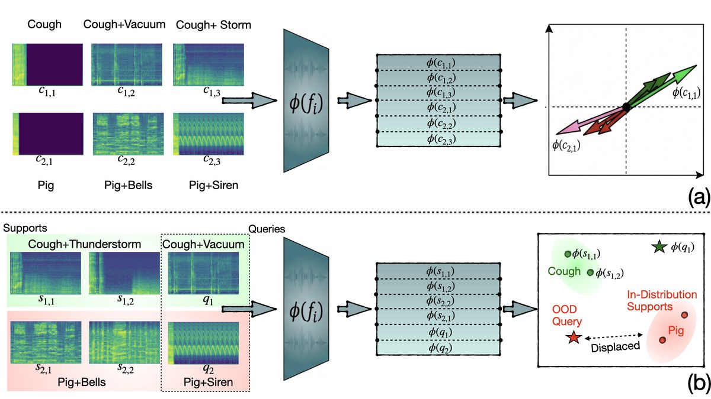

Coresets & data summarization
Small weighted subsets that approximate a loss for every query: sensitivity sampling, the f-SVD factorization for near-convex functions, and an automatic, problem-agnostic construction framework.
Applied AI Researcher · Camtek
Shrinking data and models, keeping the guarantees.
I am an applied AI researcher at Camtek. I completed my Ph.D. at the University of Haifa, advised by Prof. Dan Feldman at the Robotics & Big Data Lab (Department of Computer Science) and by Prof. Roee Diamant at the Underwater Acoustic & Navigation Lab (School of Marine Sciences).
My research interests are machine learning, deep learning, big data, and robotics. I am passionate about real-world problems and practical solutions that boost state-of-the-art solvers through approximation algorithms and computational geometry.

A common thread: replace something big (data, models, search spaces) with something small that provably behaves the same.
Small weighted subsets that approximate a loss for every query: sensitivity sampling, the f-SVD factorization for near-convex functions, and an automatic, problem-agnostic construction framework.
Theory for distilled datasets (size and excess risk for kernel ridge regression), provable initialization of distilled sets, and subset selection for efficient neural network training.
Data-independent coresets for compressing deep networks via Löwner ellipsoids and Carathéodory's theorem, with 62% compression of ResNet50 on ImageNet at a 1.09% accuracy drop.
A practical 0.385-approximation for non-monotone submodular maximization under a cardinality constraint, and DR-submodular maximization over general (not necessarily down-closed) convex sets.
Projective clustering and sets clustering coresets, minimum-volume enclosing ellipsoids, and strong coresets for M-estimator regression (Cauchy, Huber, Tukey and more).
Obstacle-aware sampling for path planning, autonomous indoor exploration with toy drones and ORB-SLAM3, and drifter deployment strategies for estimating water current fields.

Applied AI Researcher

Lead Researcher

Visiting Graduate Research Student

M.Sc. and Ph.D. in Computer Science
Etgar graduate
Peer-reviewed papers, newest first. See Google Scholar for the full record. * equal contribution

Non-monotone constrained submodular maximization plays a crucial role in various machine learning applications. However, existing algorithms often struggle with a trade-off between approximation guarantees and practical efficiency. The current state-of-the-art is a recent 0.401-approximation algorithm, but its computational complexity makes it highly impractical. The best practical algorithms for the problem only guarantee 1/e-approximation. In this work, we present a novel algorithm for submodular maximization subject to a cardinality constraint that combines a guarantee of 0.385-approximation with a low and practical query complexity of O(n+k²). Furthermore, we evaluate the empirical performance of our algorithm in experiments based on various machine learning applications, including Movie Recommendation, Image Summarization, and more.

Water current prediction is essential for understanding ecosystems, and to shed light on the role of the ocean in the global climate context. Solutions vary from physical modeling, and long-term observations, to short-term measurements. In this paper, we consider a common approach for water current prediction that uses Lagrangian floaters for water current prediction by interpolating the trajectory of the elements to reflect the velocity field. Here, an important aspect that has not been addressed before is where to initially deploy the drifting elements such that the acquired velocity field would efficiently represent the water current. To that end, we use a clustering approach that relies on a physical model of the velocity field. Our method segments the modeled map and determines the deployment locations as those that will lead the floaters to “visit” the center of the different segments. This way, we validate that the area covered by the floaters will capture the in-homogeneously in the velocity field. Exploration over a dataset of velocity field maps that span over a year demonstrates the applicability of our approach, and shows a considerable improvement over the common approach of uniformly randomly choosing the initial deployment sites. Our implementation code is publicly available.

Optimization of DR-submodular functions has experienced a notable surge in significance in recent times, marking a pivotal development within the domain of non-convex optimization. Motivated by real-world scenarios, some recent works have delved into the maximization of non-monotone DR-submodular functions over general (not necessarily down-closed) convex set constraints. Up to this point, these works have all used the minimum ℓ∞ norm of any feasible solution as a parameter. Unfortunately, a recent hardness result due to Mualem & Feldman (2023) shows that this approach cannot yield a smooth interpolation between down-closed and non-down-closed constraints. In this work, we suggest novel offline and online algorithms that provably provide such an interpolation based on a natural decomposition of the convex body constraint into two distinct convex bodies: a down-closed convex body and a general convex body. We also empirically demonstrate the superiority of our proposed algorithms across three offline and two online applications.

Dataset Distillation is the task of synthesizing small datasets from large ones while still retaining comparable predictive accuracy to the original uncompressed dataset. Despite significant empirical progress in recent years, there is little understanding of the theoretical limitations/guarantees of dataset distillation, specifically, what excess risk is achieved by distillation compared to the original dataset, and how large are distilled datasets? In this work, we take a theoretical view on kernel ridge regression (KRR) based methods of dataset distillation such as Kernel Inducing Points. By transforming ridge regression in random Fourier features (RFF) space, we provide the first proof of the existence of small (size) distilled datasets and their corresponding excess risk for shift-invariant kernels. We prove that a small set of instances exists in the original input space such that its solution in the RFF space coincides with the solution of the original data. We further show that a KRR solution can be generated using this distilled set of instances which gives an approximation towards the KRR solution optimized on the full input data. The size of this set is linear in the dimension of the RFF space of the input set or alternatively near linear in the number of effective degrees of freedom, which is a function of the kernel, number of data points, and the regularization parameter λ. The error bound of this distilled set is also a function of λ. We verify our bounds analytically and empirically.

Radial basis function neural networks (RBFNN) are well-known for their capability to approximate any continuous function on a closed bounded set with arbitrary precision given enough hidden neurons. In this paper, we introduce the first algorithm to construct coresets for RBFNNs, i.e., small weighted subsets that approximate the loss of the input data on any radial basis function network and thus approximate any function defined by an RBFNN on the larger input data. In particular, we construct coresets for radial basis and Laplacian loss functions. We then use our coresets to obtain a provable data subset selection algorithm for training deep neural networks. Since our coresets approximate every function, they also approximate the gradient of each weight in a neural network, which is a particular function on the input. We then perform empirical evaluations on function approximation and dataset subset selection on popular network architectures and data sets, demonstrating the efficacy and accuracy of our coreset construction.

A coreset is a small weighted subset of an input set that approximates its loss function, for a given set of queries. Coresets became prevalent in machine learning as they have shown to be advantageous for many applications. Unfortunately, coresets are constructed in a problem-dependent manner, where for each problem, a new coreset construction algorithm is suggested, taking years to prove its correctness. Even the generic frameworks require additional (problem-dependent) computations or proofs to be done by the user. Besides, many problems do not have (provable) small coresets, limiting their applicability. To this end, we suggest an automatic practical framework for constructing coresets, which requires (only) the input data and the desired cost function from the user, without the need for any other task-related computation to be done by the user. To do so, we reduce the problem of approximating a loss function to an instance of vector summation approximation, where the vectors we aim to sum are loss vectors of a specific subset of the queries, such that we aim to approximate the image of the function on this subset. We show that while this set is limited, the coreset is quite general. An extensive experimental study on various machine learning applications is also conducted. Finally, we provide a “plug and play” style implementation, proposing a user-friendly system that can be easily used to apply coresets for many problems. We believe that these contributions enable future research and easier use and applications of coresets.

Pruning is one of the predominant approaches for compressing deep neural networks (DNNs). Lately, coresets (provable data summarizations) were leveraged for pruning DNNs, adding the advantage of theoretical guarantees on the trade-off between the compression rate and the approximation error. However, coresets in this domain were either data dependant or generated under restrictive assumptions on both the model's weights and inputs. In real-world scenarios, such assumptions are rarely satisfied, limiting the applicability of coresets. To this end, we suggest a novel and robust framework for computing such coresets under mild assumptions on the model's weights and without any assumption on the training data. The idea is to compute the importance of each neuron in each layer with respect to the output of the following layer. This is achieved by an elegant combination of Löwner ellipsoid and Carathéodory theorem. Our method is simultaneously data-independent, applicable to various networks and datasets (due to the simplified assumptions), and theoretically supported. Experimental results show that our method outperforms existing coreset based neural pruning approaches across a wide range of networks and datasets. For example, our method achieved a 62% compression rate on ResNet50 on ImageNet with 1.09% drop in accuracy.

Many path planning algorithms are based on sampling the state space. While this approach is very simple, it can become costly when the obstacles are unknown, since samples hitting these obstacles are wasted. The goal of this paper is to efficiently identify obstacles in a map and remove them from the sampling space. To this end, we propose a pre-processing algorithm for space exploration that enables more efficient sampling. We show that it can boost the performance of other space sampling methods and path planners. Our approach is based on the fact that a convex obstacle can be approximated provably well by its minimum volume enclosing ellipsoid (MVEE), and a non-convex obstacle may be partitioned into convex shapes. Our main contribution is an algorithm that strategically finds a small sample, called the active-coreset, that adaptively samples the space via membership-oracle such that the MVEE of the coreset approximates the MVEE of the obstacle. Experimental results confirm the effectiveness of our approach across multiple planners based on rapidly-exploring random trees, showing significant improvement in terms of time and path length.

(j,k)-projective clustering is the natural generalization of the family of k-clustering and j-subspace clustering problems. Given a set of points P in ℝd, the goal is to find k flats of dimension j, i.e., affine subspaces, that best fit P under a given distance measure. In this paper, we propose the first algorithm that returns an L∞ coreset of size polynomial in d. Moreover, we give the first strong coreset construction for general M-estimator regression. Specifically, we show that our construction provides efficient coreset constructions for Cauchy, Welsch, Huber, Geman-McClure, Tukey, L1−L2, and Fair regression, as well as general concave and power-bounded loss functions. Finally, we provide experimental results based on real-world datasets, showing the efficacy of our approach.

In the monitoring problem, the input is an unbounded stream P = p1, p2, … of integers in [N] := {1, …, N}, that are obtained from a sensor (such as GPS or heart beats of a human). The goal (e.g., for anomaly detection) is to approximate the n points received so far in P by a single frequency sin, e.g. minc∈C cost(P, c) + λ(c), where cost(P, c) = Σi=1..n sin²(2π/N · pic), C ⊆ [N] is a feasible set of solutions, and λ is a given regularization function. For any approximation error ε > 0, we prove that every set P of n integers has a weighted subset S ⊆ P (sometimes called core-set) of cardinality |S| ∈ O(log(N)O(1)) that approximates cost(P, c) (for every c ∈ [N]) up to a multiplicative factor of 1 ± ε. Using known coreset techniques, this implies streaming algorithms using only O((log(N) log(n))O(1)) memory. Our results hold for a large family of functions. Experimental results and open source code are provided.

We present an efficient coreset construction algorithm for large-scale Support Vector Machine (SVM) training in Big Data and streaming applications. A coreset is a small, representative subset of the original data points such that a model trained on the coreset is provably competitive with that trained on the original data set. Since the size of the coreset is generally much smaller than the original set, our preprocess-then-train scheme has potential to lead to significant speedups when training SVM models. We prove lower and upper bounds on the size of the coreset required to obtain small data summaries for the SVM problem. As a corollary, we show that our algorithm can be used to extend the applicability of any off-the-shelf SVM solver to streaming, distributed, and dynamic data settings. We evaluate the performance of our algorithm on real-world and synthetic data sets. Our experimental results reaffirm the favorable theoretical properties of our algorithm and demonstrate its practical effectiveness in accelerating SVM training.

The input to the sets-k-means problem is an integer k ≥ 1 and a set 𝒫 = {P1, …, Pn} of fixed sized sets in ℝd. The goal is to compute a set C of k centers (points) in ℝd that minimizes the sum ΣP∈𝒫 minp∈P, c∈C ‖p − c‖² of squared distances to these sets. An ε-core-set for this problem is a weighted subset of 𝒫 that approximates this sum up to 1 ± ε factor, for every set C of k centers in ℝd. We prove that such a core-set of O(log² n) sets always exists, and can be computed in O(n log n) time, for every input 𝒫 and every fixed d, k ≥ 1 and ε ∈ (0, 1). The result easily generalized for any metric space, distances to the power of z > 0, and M-estimators that handle outliers. Applying an inefficient but optimal algorithm on this coreset allows us to obtain the first PTAS (1 + ε approximation) for the sets-k-means problem that takes time near linear in n. This is the first result even for sets-mean on the plane (k = 1, d = 2). Open source code and experimental results for document classification and facility locations are also provided.

Coreset is usually a small weighted subset of n input points in ℝd, that provably approximates their loss function for a given set of queries (models, classifiers, etc.). Coresets become increasingly common in machine learning since existing heuristics or inefficient algorithms may be improved by running them possibly many times on the small coreset that can be maintained for streaming distributed data. Coresets can be obtained by sensitivity (importance) sampling, where its size is proportional to the total sum of sensitivities. Unfortunately, computing the sensitivity of each point is problem dependent and may be harder to compute than the original optimization problem at hand. We suggest a generic framework for computing sensitivities (and thus coresets) for wide family of loss functions which we call near-convex functions. This is by suggesting the f-SVD factorization that generalizes the SVD factorization of matrices to functions. Example applications include coresets that are either new or significantly improves previous results, such as SVM, Logistic regression, M-estimators, and ℓz-regression. Experimental results and open source are also provided.

Few-shot classification (FSC) is widely used for learning from limited labeled data, yet most evaluations implicitly assume that target concepts are independent of contextual cues. In real-world settings, however, examples often appear within rich contexts, allowing models to exploit spurious correlations between foreground content and background signals. While such effects have been studied in few-shot image classification, their role in few-shot audio classification remains largely unexplored, and existing audio benchmarks offer limited control over contextual structure. We introduce SpurAudio, a benchmark that leverages the natural separability of foreground events and background environments in audio to enable controlled, multi-level evaluation of contextual shifts across support and query sets. Using this benchmark, we show that many state-of-the-art few-shot methods suffer severe performance degradation when background correlations are disrupted, despite achieving similar accuracy under standard evaluation protocols. Crucially, this vulnerability persists even in large pretrained audio foundation models, ruling out limited backbone capacity as an explanation. Moreover, methods that appear comparable under conventional benchmarks can exhibit markedly different sensitivity to spurious correlations, revealing systematic algorithmic strengths and vulnerabilities tied to how feature representations interact with classifier heads at inference time. These findings provide new insight into the behavior of few-shot methods in audio and highlight the need for benchmarks that explicitly probe context dependence when evaluating FSC models.

Deep learning has grown tremendously over recent years, yielding state-of-the-art results in various fields. However, training such models requires huge amounts of data, increasing the computational time and cost. To address this, dataset distillation was proposed to compress a large training dataset into a smaller synthetic one that retains its performance. This is usually done by (1) uniformly initializing a synthetic set and (2) iteratively updating/learning this set according to a predefined loss by uniformly sampling instances from the full data. In this paper, we improve both phases of dataset distillation: (1) we present a provable, sampling-based approach for initializing the distilled set by identifying important and removing redundant points in the data, and (2) we further merge the idea of data subset selection with dataset distillation, by training the distilled set on “important” sampled points during the training procedure instead of randomly sampling the next batch. To do so, we define the notion of importance based on the relative contribution of instances with respect to two different loss functions, i.e., one for the initialization phase (a kernel fitting function for kernel ridge regression and K-means based loss function for any other distillation method), and the relative cross-entropy loss (or any other predefined loss) function for the training phase. Finally, we provide experimental results showing how our method can latch on to existing dataset distillation techniques and improve their performance.
University of Haifa, Department of Computer Science.
Reviewer for